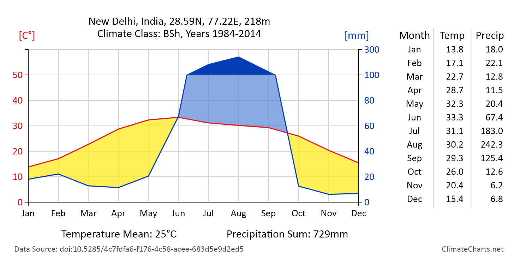

ClimateCharts.net
An application to create meteorological charts for places worldwide
In this application you can dynamically create a climate chart for a specific location and time frame. Click on the map or type in coordinates into the fields for Latitude/Longitude to choose a point of interest, select a time frame in the dropdown menu on the right and then click on "Create Chart".
Dataset:
Period:
Save as:
Datasets
Please note that the temperature and precipitation values shown in the diagram are based on interpolated data and therefore might differ significantly from real conditions.
For the title and elevation value "Geonames"
gazetteer is used:
http://www.geonames.org/,
Creative Commons Attribution 3.0 License
Elevation is based on SRTM data and only available between 60° northern and 58° southern latitude. The climate class is calculated from the temperature and precipitation data according to the Köppen-Geiger climate classification scheme.
Software
Frontend libraries:
- Data Driven Documents (D3)
- Leaflet
- Bootstrap
- JQuery + JQuery-UI
Servers and web services:
- THREDDS Data Server
- GeoNames Webservices
Optimized for Firefox and Chrome. This website uses the Piwik Analytics Platform to obtain user data.
The Walter-Lieth Chart
The charts on this site are drawn following the Walter-Lieth standard. The most characteristic feature of this type of climate diagram is that the ratio between temperature and precipitation scale is constantly 1:2, which makes it easier to compare local climates. If there are precipitation values above 100mm per month, the scale above is aligned, ensuring that the chart doesn't become to missshaped. Additionally, it graphically emphasizes in a simplified form if the local conditions are humid, perhumid, arid or seasonally changing.

The
imprint of the Technical University Dresden is applied
with the following constraint:
Web design and technical development:
M.Sc. Felix Wiemann (felixw@posteo.at)
Contact:
Prof. Dr. Lars Bernard
Mail: Lars.Bernard@tu-dresden.de
Phone: +49 (0)351 463-35880